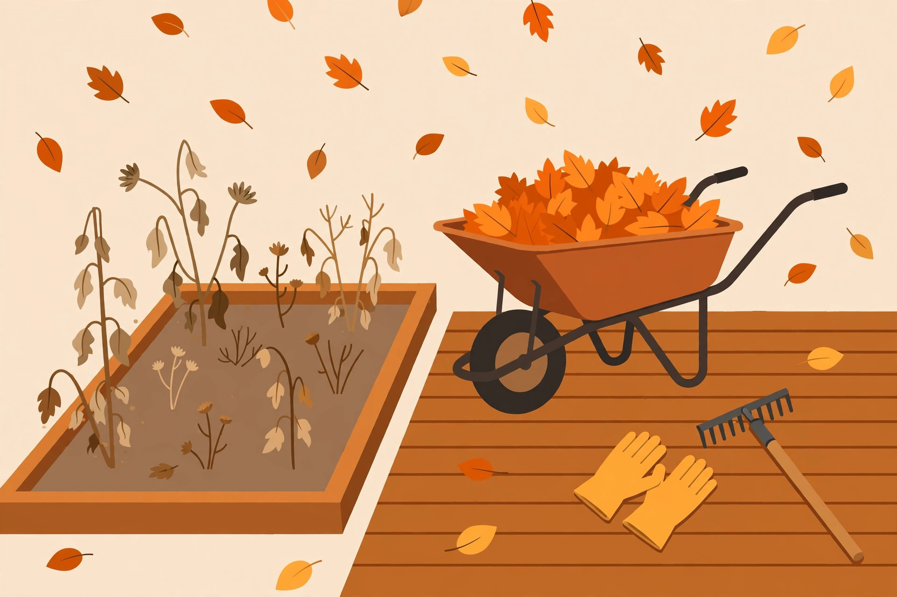

The October yard reset: where to start

Fall yard work has a deadline that spring never gives you: the first hard freeze. Once the ground is frozen, leaf cleanup becomes miserable, mowing is done, and anything still sitting outside has to survive winter as-is. The window between peak leaf drop and the freeze is usually a few weeks — sometimes just a couple of weekends. So the whole game is prioritization.
The one rule: work in the right order
Leaves keep falling while you're working, so don't start by chasing a perfect lawn. The order that wastes the least effort looks like this:
- Bring in the fragile stuff first. Hoses, delicate planters, outdoor cushions, anything that can't take a frost. This takes an hour and prevents the most expensive mistakes.
- Clean the gutters. Do this while leaves are still falling — a mid-fall clean plus a quick check after the last leaves drop beats one late clean. Water damage from clogged gutters costs far more than any other skipped fall chore. (See our gutter safety guide before you climb anything.)
- Do the lawn's final pass and leaf cleanup together. Mulch-mowing handles both at once — more on that in the leaf strategy guide.
- Winterize the mower and tools. Do it the same day as the last mow, while everything's still out, or it simply won't happen.
What actually needs doing in October
Beyond the sequence above, walk the yard with a notebook (or your phone) and list what you see:
- Leaves: Note where they pile up — under trees, along fences, in garden beds, in window wells. Piles against the house invite moisture problems and rodents looking for shelter.
- Garden beds: Pull spent annuals. Leave perennials standing if you like — their seed heads feed birds and their hollow stems shelter beneficial insects. Cutting them down is fine too; it's an aesthetic choice, not a rule.
- Patios and walkways: Clear leaf piles from drainage paths and low spots. Leaves that mat down on stone or concrete make a slippery mess and stain it.
- Vegetable gardens: Pull finished plants, compost the healthy ones, and throw anything diseased in the trash (not the compost) so problems don't overwinter in your pile.
What can safely wait until spring
Not everything is urgent, and knowing what to skip is half the strategy:
- Pruning most shrubs and trees. Light cleanup of broken or dead branches is fine, but major pruning is a late-winter or spring job. Pruning in fall can stimulate tender new growth that the frost kills.
- Fertilizing. Unless you're doing a deliberate late-fall lawn feeding (see the lawn prep guide), skip it. Fall fertilizer on beds just feeds weeds.
- Repainting or staining outdoor wood. Cold, damp air means slow curing. This is spring work.
The weekend plan. Weekend 1 (early October): bring in fragile items, clean gutters once, pull annuals and vegetable plants. Weekend 2–3 (peak leaf drop): mulch-mow weekly, clear beds and paths. Late fall: final mow, winterize equipment, quick gutter re-check. Done.
Gear up once, at the start
Every October trip to the hardware store costs you a work session. Before you start, make sure you have: sturdy gloves, a rake that doesn't flex like a noodle, a tarp for dragging leaves, yard-waste bags (check your town's rules on bag type first), and a ladder that's actually stable if you're touching the gutters. Sharpen the mower blade now — a sharp blade makes the final cuts and leaf mulching far more effective.
The freeze is the real deadline
Check your area's average first frost date and work backward two weeks — that's your real finish line. Everything after that is weather permitting. Get the fragile things in, the leaves handled, the gutters clear, and the equipment stored before then, and the yard will sit quiet all winter without costing you anything in spring.